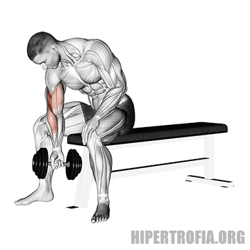

Treino D1: Ombros & Braços (Volumoso)
Foco: Volume e Definição (Deltóides, Bíceps e Tríceps) | Duração Estimada: 60 minutos

#1
Desenvolvimento com Halteres (Sentado)
Dica: Sentar evita usar o corpo para impulso. Desça até a altura das orelhas e não trave no topo.

#2
Elevação Lateral (Halteres)
Dica: Mantenha o cotovelo levemente flexionado e eleve o peso até a altura do ombro, sem passar.

#3
Rosca Concentrada (Bíceps)
Dica: Apoie o cotovelo na parte interna da coxa. É um ótimo exercício de pico de bíceps e isolamento.

#4
Tríceps Testa (Barra ou Halteres)
Dica: Mantenha os cotovelos fixos e próximos um do outro durante todo o movimento. Desça até a testa.